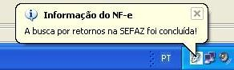
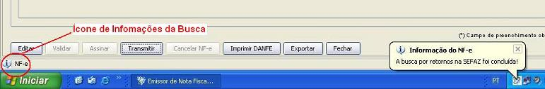
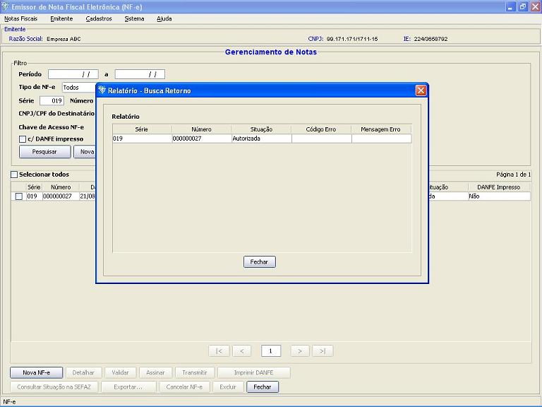
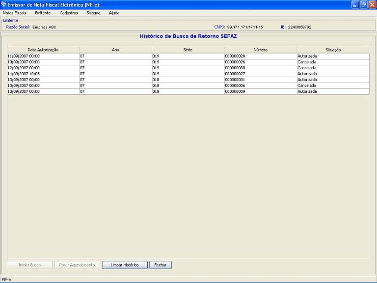

Software Emissor NF-e
Busca pelos retornos na SEFAZ
A busca pelos retornos na SEFAZ é o processo que o Software
Emissor executa para pesquisar o resultado do processamento das NF-e's
enviadas, verificando se a nota foi autorizada, denegada ou rejeitada
pela SEFAZ.
A busca pelos retornos é disparada de forma automática
pelo Software após qualquer transmissão de NF-e com
sucesso para a SEFAZ.
Após o término da busca, um balão informativo aparecerá no system tray
para avisar o usuário que a busca foi concluída.
Também ficará disponível um pequeno ícone
na barra de status do aplicativo. Clicando no ícone, o Software irá apresentar o resultado da busca de cada uma das NF-e's.
O software também irá atualizar a
situação de cada uma das NF-e's buscadas na SEFAZ. Tais
NF-e's poderão ser consultadas pela função de
gerenciamento de notas.
Após o término da Busca, o Software informará através de Aviso pelo System Tray (em caso de uso do Sistema Operacional Windows)

E apresentará o ícone de informações da Busca na barra de status (barra inferior do Software):

Clicanco no ícone, uma janela com as informações
dos retornos é apresentada, mostrando se as NF-e's foram
autorizadas:

Iniciando a busca de retornos manualmente
Caso existam NF-e's com situação
"Em
processamento na SEFAZ" ou "Com problemas na
transmissão/pendente" e a busca não estiver em
execução ou agendada, o usuário poderá
iniciá-la manualmente da seguinte maneira:
Pré-condição:
-Um emitente
deverá estar previamente iniciado.
-Pelo menos uma NF-e deve estar "Em
processamento na SEFAZ" ou "Com problemas na
transmissão/pendente"
- Acesso ao menu Notas Fiscais -> Consultar
Pendências na SEFAZ
- Na tela de
pendências de buscas, caso existam NF-e's a em processamento
na SEFAZ ou com problemas na transmissão, o botão
de Iniciar Busca
estará habilitado. Para iniciar a busca na SEFAZ, clicar no
botão.
- Na janela de
seleção de Certificado Digital, escolher o
Arquivo (para
Certificado tipo A1), informando a senha, ou Repositório
(para Certificado tipo A3)
- Após a
seleção, clicar em Selecionar.
- O Software irá
iniciar a busca pelas pendências na SEFAZ (ou seja, os
respectivos protocolos das NF-e's em Processamento na SEFAZ e a
situação das NF-e's com problemas na
transmissão) e informará quando esta busca for
concluída.
Importante: Em toda a busca de retorno, TODAS as NF-e's em processamento na SEFAZ pendentes ou com problemas na transmissão serão pesquisadas na SEFAZ.
Agendamento de buscas
O agendamento das buscas de retorno da SEFAZ ocorre quando, após
uma primeira busca pelos protocolos, as NF-e's ainda encontram-se Em processamento na SEFAZ,
ou seja, as Notas enviadas ainda não terminaram de ser
processadas pela SEFAZ e necessita-se de mais um período de
tempo para a conclusão e disponibilização da
resposta.
Caso ocorra esta situação, o Software Emissor NF-e realizará automaticamente um Agendamento de uma nova busca na SEFAZ após o período de tempo definido no parâmetro de sistema Intervalo entre consultas de processamentos pendentes.
Caso após esta nova busca a NF-e ainda encontre-se em
processamento na SEFAZ, um novo agendamento será realizado
até que todas as NF-e's tenham a respectiva resposta da SEFAZ.
Exemplo:
Após a transmissão de 10 NF-e's para a SEFAZ, estas ficam com a situação Em processamento na SEFAZ.
Logo a seguir, a Busca pelos retornos destas NF-e's na SEFAZ é iniciado pelo Software Emissor.
Depois desta primeira busca, temos que 5 das NF-e's ainda encontram-se
em Processamento na SEFAZ, e as outras 5 já receberam a resposta
(autorização, denegação
ou rejeição)
Como ainda temos NF-e's com a situação Em processamento
na SEFAZ, o Software realizará um agendamento da Busca pelos
retornos.
O tempo de espera até esta nova busca é definida no parâmetro Intervalo entre consultas de processamentos pendentes, que está em 10 segundos.
Assim, passados 10 segundos, uma nova busca será realizada.
Parando o Agendamento manualmente
Caso exista um agendamento, o usuário poderá terminá-lo.
Pré-condição:
-Um emitente
deverá estar previamente iniciado.
- Acessar o menu Notas Fiscais -> Consultar
Pendências na SEFAZ
- Na tela de
pendências de buscas, clicar no botão Parar Agendamento.
Importante: Na próxima Busca de retornos, TODAS as NF-e's em processamento na SEFAZ pendentes que deixaram de ser consultadas pelo agendamento serão pesquisadas na SEFAZ.
Tela de Busca de Retornos pendentes - apresenta
o histórico de Autorizações,
Denegações e Cancelamentos:
